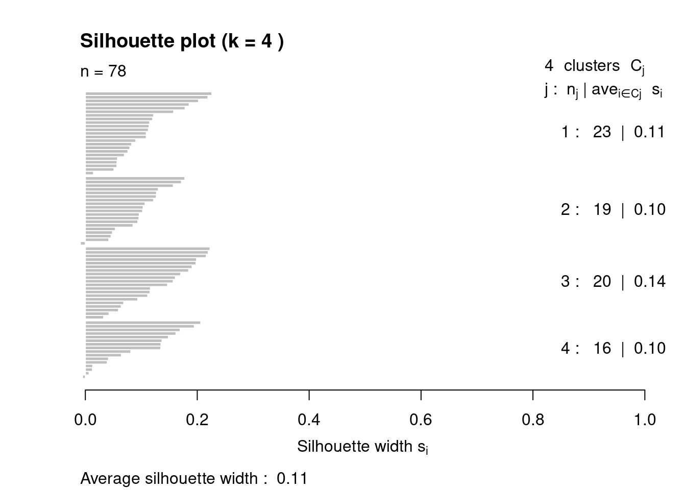

Module 3 case review activity: Clustering validation
Author
Elizabeth Cloude
Published
April 30, 2025
An important task in using clustering methods is validation. Most existing methods present it as a model selection problem, in which the clustering algorithm is run with different values of K, where the best value of K maximizes or minimizes a selected criterion. Validation can also be used to select between different types of clustering, e.g., spectral vs. gmm vs. k-means.
In this case review activity, we will apply k-means clustering methods, similar to the approach used in (Khosravi and Cooper 2017). Since their dataset and code were not made available, we will create from scratch. The authors described their sample as being collected from a large, flipped introductory programming course. We will need to generate our own data using similar variables, conduct k-means clustering and validation, and then interpret the results.
The authors study the specific variables:
Performance: summative (S) and formative (F)
S features: S1-S3, use a total of 7 scores from summative assessments:
S1: (labs) the average lab grade of students for the first 5 labs;
S2: (midterm 1) the first midterm grade; and,
S3: (midterm 2) the second midterm grade.
F features: F1 and F2, use a total of 30 scores from formal assessments:
F1: (clickers) the average clicker grade over 15 lectures; and,
F2: (worksheets) the average grade of students for the in-class exercises over 15 lectures.
Engagement: behavioral (B)
B features: B1-B4, use a total of 41 scores to represent the number of view of screen casts for the 15 online lectures
B1: (screen cast views) the total number of views of screen casts for the 15 lectures;
B2: (worksheet solution view) the total number of solution (out of 15);
B3: (pre-lab exercise views) the total number of view of the 5 pre-lab exercises; and
B4: (examination/solution views) the total number of files out of the four practice questions with solutions for midterms; and two exam solutions for the midterm student access.
We have a lot of features to work with, where each falls across three dimensions: S, F, B, and on the top: performance and engagement categories. These data represents multiple, hierarchical dimensions.
Before we start, let’s ensure we have installed the right packages.
chooseCRANmirror(graphics =FALSE, ind =1)if (!require("tidyverse")) install.packages("tidyverse", dependencies =TRUE)
Loading required package: tidyverse
── Attaching core tidyverse packages ──────────────────────── tidyverse 2.0.0 ──
✔ dplyr 1.1.4 ✔ readr 2.1.5
✔ forcats 1.0.0 ✔ stringr 1.5.1
✔ ggplot2 3.5.1 ✔ tibble 3.2.1
✔ lubridate 1.9.4 ✔ tidyr 1.3.1
✔ purrr 1.0.4
── Conflicts ────────────────────────────────────────── tidyverse_conflicts() ──
✖ dplyr::filter() masks stats::filter()
✖ dplyr::lag() masks stats::lag()
ℹ Use the conflicted package (<http://conflicted.r-lib.org/>) to force all conflicts to become errors
Loading required package: kableExtra
Attaching package: 'kableExtra'
The following object is masked from 'package:dplyr':
group_rows
library(kableExtra)
Let’s generate random data based on their description of the data structure and variables.
We will normalize the scores, putting them on a similar scale before conducting the clustering analysis. The authors scaled the dimensions by transforming them into normalized values with a mean of 0 and standard deviation of 1.
By transforming each variable to have a mean of 0 and standard deviation of 1, every dimension contributes equally to the distance calculation. Without proper scaling, the variable(s) with larger numerical ranges could dominate the clustering, potentially obscuring patterns in other dimensions.
# Set seed for reproducibilityset.seed(123)# Define number of studentsn_students <-78# Generate random normalized data for each featuregenerate_scaled_data <-function(n) {scale(rnorm(n, mean =0, sd =1))}# Generate Final Exam scores in range 0-100generate_final_exam_score <-function(n) {runif(n, min =0, max =100) # Uniform distribution between 0 and 100} # the authors did not provide average or SD information to estimate the distribution# Create a data framestudent_data <-data.frame(Student_ID =1:n_students,S1 =generate_scaled_data(n_students), # Average lab grade (first 5 labs)S2 =generate_scaled_data(n_students), # Midterm 1 gradeS3 =generate_scaled_data(n_students), # Midterm 2 gradeF1 =generate_scaled_data(n_students), # Clicker grade (15 lectures)F2 =generate_scaled_data(n_students), # Worksheet grade (15 lectures)B1 =generate_scaled_data(n_students), # Screencast views (15 lectures)B2 =generate_scaled_data(n_students), # Worksheet solution views (out of 15)B3 =generate_scaled_data(n_students), # Pre-lab exercise views (5 pre-labs)B4 =generate_scaled_data(n_students), # Examination solution views (out of 6)Final_Exam =generate_final_exam_score(n_students))head(student_data)
The paper by (Khosravi and Cooper 2017) applied two cluster validation methods. First, a gap statistic was used to measure clusters based on properties of internal cohesion and external separation (Tibshirani, Walther, and Hastie 2001). The gap statistic helps identify an initial range for K by comparing the clustering structure in the data to that of randomly distributed points. They explored a minimum of 2, and a maximum of 14 clusters, a guideline provided by a prior study (Thorndike 1953), but we will assess if that is optimal for our randomly generated data. The second method used was the ‘elbow’ method to evaluate the sum of square errors (SSE) for a range of values of K.
To account for random initialization of centroids in k-means, for each value in the range, the authors ran 100 executions of the k-means algorithm and the solution with the highest likelihood is selected. While the authors did not discuss the gap statistic output, we will run it for teaching purposes.
Based on the gap statistic, it appears that 1 one cluster is optimal, suggesting that there may not be distinct groups within our dataset (possibly due to generating a normal distribution or small sample size of 78). Next, the authors used the elbow method to determine the optimal number of clusters (K) by running k-means for K values. We will apply this with a range [2, 14] for teaching purposes, even though this grouping may be artificial based on our randomly generated dataset.
Elbow method
We will run a loop to calculate k-means using 2-14 clusters.
Next, we evaluate the k range using an elbow plot.
# Create elbow plot dataelbow_plot <-data.frame(K = k_range, SSE = sse_values)ggplot(elbow_plot, aes(x = K, y = SSE)) +geom_point() +geom_line() +ggtitle("Elbow Method for Optimal K") +xlab("Number of Clusters (K)") +ylab("Sum of Squared Errors (SSE)")
📌 Question: How many clusters should we indicate for k-means based on the elbow plot?
# Suppose we pick k=4 from the elbow or gap; could also be 5k <-4kmeans_result <-kmeans(student_data %>%select(-Student_ID, -Final_Exam), centers = k, nstart =100)student_data$Cluster <-factor(kmeans_result$cluster)kmeans_result
📌 Question: What can we gather from the variance explained?
Silhouette method
Another common validation method is Silhouette analysis, a method that the authors did not utilize in the paper. Silhouette analysis is a way to evaluate how well-separated the clusters are in a clustering solution. For each data point, it measures:
How close the point is to others in the same cluster
How far the point is from points in the nearest different cluster
The silhouette width for any data point generally falls in the range −1 to −1:
+1: indicates a perfectly separated point, i.e., it’s much closer to its own cluster than any other cluster.
0: indicates a boundary point equally close to its own cluster as to a neighboring cluster.
−1: suggests the point is assigned to the wrong cluster, as it’s closer to a different cluster than its own.
dist_matrix <-dist(student_data %>%select(-Student_ID, -Final_Exam, -Cluster), method ="euclidean")sil <-silhouette(kmeans_result$cluster, dist_matrix)mean_sil_width <-summary(sil)$avg.widthcat("Mean Silhouette Width for k =", k, "is", mean_sil_width, "\n")
Mean Silhouette Width for k = 4 is 0.1128031
plot(sil, main =paste("Silhouette plot (k =", k, ")"))

📌 Question: What can we gather from the silhouette visualization? How close are the clusters to each other?
The average silhouette width is quite low (.11). This indicates that our clusters are not well separated. Since it is near 0, it indicates that most points are only slightly closer to their own cluster’s center than to centers of other clusters.
Next, (Khosravi and Cooper 2017) created a visualization of the cluster groupings with final exam score variables (which we excluded from our k-means analysis).
ggplot(student_data, aes(x = Cluster, y = Final_Exam, fill = Cluster)) +geom_boxplot() +ggtitle("Boxplot of Final Exam Grades by Cluster") +xlab("Cluster") +ylab("Final Exam Score") +theme_minimal()
Groups 1 and 3 appear to outperform groups 2 and 4 regarding final exam scores.
Cluster Interpretation
The authors provided the median (but I added the average and SD).
# Compute summary statistics for Final Exam scores by Clustersummary_table <- student_data %>%group_by(Cluster) %>%summarise(Mean =mean(Final_Exam),Std_Dev =sd(Final_Exam),Median =median(Final_Exam) )summary_table %>%kable("html", caption ="Final Exam Scores by Cluster") %>%kable_styling(full_width =FALSE)
Normalized Values of Student Features (S1-3, F1-2, B1-4) by Cluster
Cluster
Mean_S1
Std_S1
Median_S1
Mean_S2
Std_S2
Median_S2
Mean_S3
Std_S3
Median_S3
Mean_F1
Std_F1
Median_F1
Mean_F2
Std_F2
Median_F2
Mean_B1
Std_B1
Median_B1
Mean_B2
Std_B2
Median_B2
Mean_B3
Std_B3
Median_B3
Mean_B4
Std_B4
Median_B4
1
-0.3603077
0.8825635
-0.4512761
0.3117187
1.0922239
0.3148471
-0.7996153
0.4067517
-0.7909660
-0.0879176
0.9851686
-0.0754996
-0.5085279
0.9279212
-0.4541564
0.7041883
0.6390962
0.6904529
-0.3118723
0.9877097
-0.3620482
-0.2607151
0.6858903
-0.3176950
0.5184058
0.9609842
0.6188367
2
0.1783690
0.9502891
0.2103746
0.2629476
0.9065340
0.2542947
0.6788241
0.8883907
0.5355729
-0.7262442
0.7952441
-0.7067900
-0.1658799
1.0053031
-0.0297082
-0.6840823
0.7539766
-0.5012948
0.1026723
0.9511016
0.2456422
-0.7216142
0.9005715
-0.9317416
0.3951152
0.7182412
0.4496494
3
0.6212869
0.8450670
0.4182526
-0.3781287
0.8154797
-0.3550243
-0.2872137
0.6808003
-0.3397292
0.4220032
0.7981226
0.2373418
0.3519330
0.9240171
0.3534924
-0.6785556
0.8915587
-0.5684547
-0.3967000
0.7027482
-0.3584397
0.3064278
0.9871054
0.4596658
-0.9058394
0.7586214
-1.0197314
4
-0.4704795
1.0062580
-0.4277308
-0.2876852
1.0196416
-0.2851518
0.7023604
1.0752894
0.4590409
0.4612925
0.9998655
0.6349509
0.4880752
0.8518282
0.2901938
0.6482716
0.6557132
0.6787384
0.8222680
0.9475838
0.8944140
0.8486600
0.7606923
0.7307737
-0.0821083
0.8484031
-0.0411617
📌 Question: What conclusions can we draw about student groups based on k-means analysis?
Research Question 2: Overly engaged student subpopulations
In the paper, (Khosravi and Cooper 2017) looked further at extreme subpopulations of students’ behavior “engagement†variables: B1-B4.
Overly engaged participants: those with the highest number of interactions with online materials. Students with the highest 20% of the average, behavioral values were selected as the subpopulation of study. We do so in the code chunk below:
# Compute the average of E1, E2, and E3 for each studentstudent_data <- student_data %>%mutate(Average_B = (B1 + B2 + B3 + B4) /4)# Determine the top 20% of studentstop_n <-ceiling(0.20*nrow(student_data))# Filter students who have the highest Average_B valuestop_students <- student_data %>%arrange(desc(Average_B)) %>%slice_head(n = top_n) # Select top 20% studentstop_students
# Plot Elbow Methodggplot(elbow_plot, aes(x = K, y = SSE)) +geom_point() +geom_line() +ggtitle("Elbow Method for Optimal K") +xlab("Number of Clusters (K) for overly engaged participants") +ylab("Sum of Squared Errors (SSE)")
📌 Question: How many clusters should we select based on the elbow plot?
optimal_k <-5# could also be 4# Perform k-means clusteringkmeans_result <-kmeans(top_students %>%select(-Student_ID,-Final_Exam,-Cluster, -Average_B), centers = optimal_k, nstart =100)top_students$Cluster <-factor(kmeans_result$cluster)
We will now display the Final Exam Scores by each cluster.
ggplot(top_students, aes(x = Cluster, y = Final_Exam, fill = Cluster)) +geom_boxplot() +ggtitle("Boxplot of Final Exam Grades by Overly Engaged Participant Clusters") +xlab("Cluster") +ylab("Final Exam Score") +theme_minimal()
📌 Question: What can we infer about overly engaged participants and their final grades?
To identify subgroups within clusters, there are more advanced clustering techniques we can use. We will learn more about this in the next module.
References
Khosravi, Hassan, and Kendra ML Cooper. 2017. “Using Learning Analytics to Investigate Patterns of Performance and Engagement in Large Classes.†In Proceedings of the 2017 Acm Sigcse Technical Symposium on Computer Science Education, 309–14.
Thorndike, Robert L. 1953. “Who Belongs in the Family?”Psychometrika 18 (4): 267–76.
Tibshirani, Robert, Guenther Walther, and Trevor Hastie. 2001. “Estimating the Number of Clusters in a Data Set via the Gap Statistic.”Journal of the Royal Statistical Society: Series B (Statistical Methodology) 63 (2): 411–23.